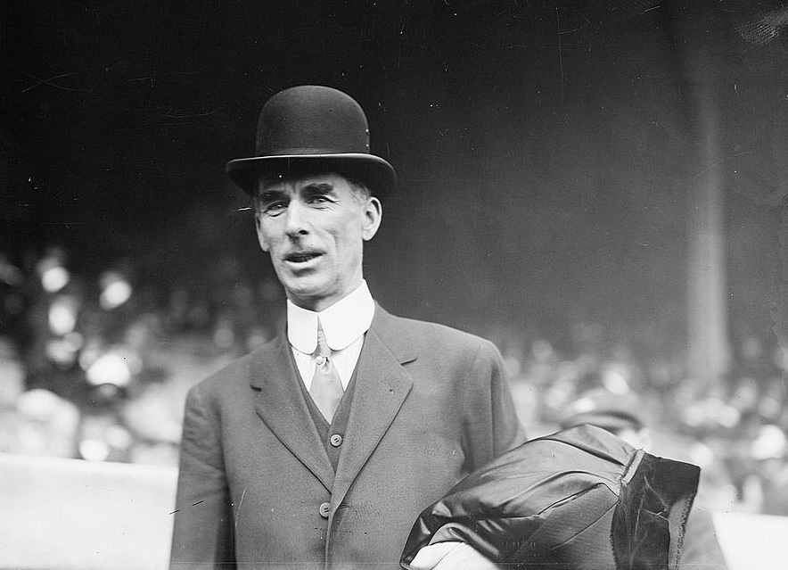

The manager in baseball is the equivalent of a head coach who is responsible for overseeing and making final decisions on all aspects of on-field team strategy, lineup selection, training and instruction. A manager cna be as important as a start player. Typically really good championship winning teams have a great manager behind them.
| Rank | Name | Manegerial Wins |
|---|---|---|
| 1 | Connie Mack | 3,731 |
| 2 | John McGraw | 2,763 |
| 3 | Tony La Russa | 2,728 |
| 4 | Bobby Cox | 2,504 |
| 5 | Joe Torre | 2,326 |
| 6 | Sparky Anderson | 2,194 |
| 7 | Bucky Harris | 2,158 |
| 8 | Joe McCarthy | 2,158 |
| 9 | Walter Alston | 2,040 |
| 10 | Leo Durocher | 2,008 |